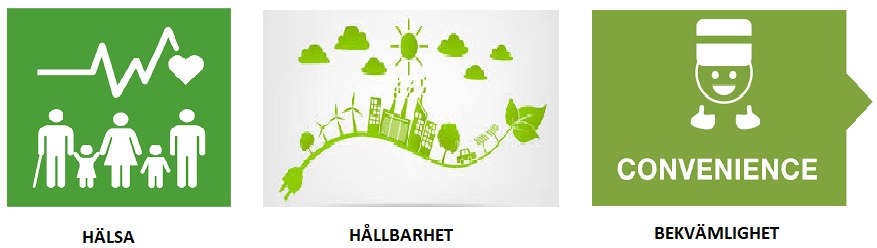
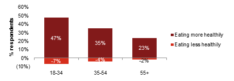
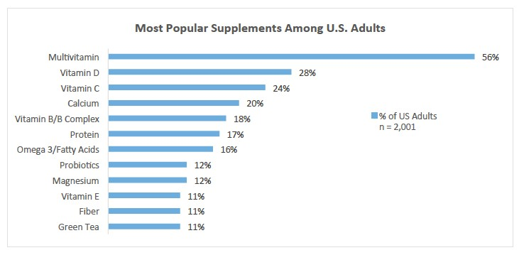
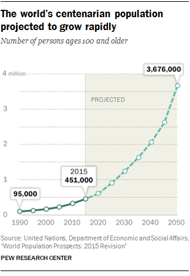
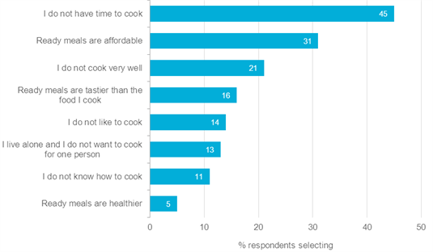
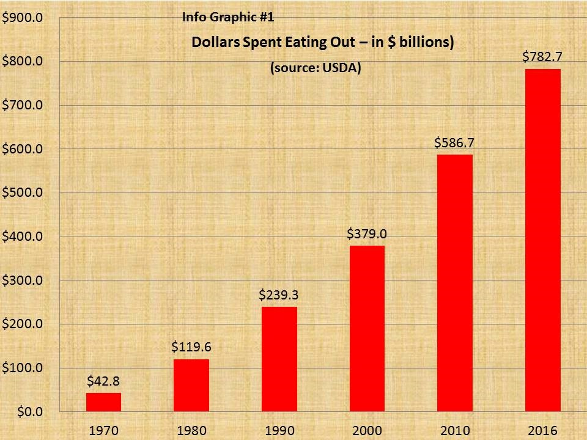
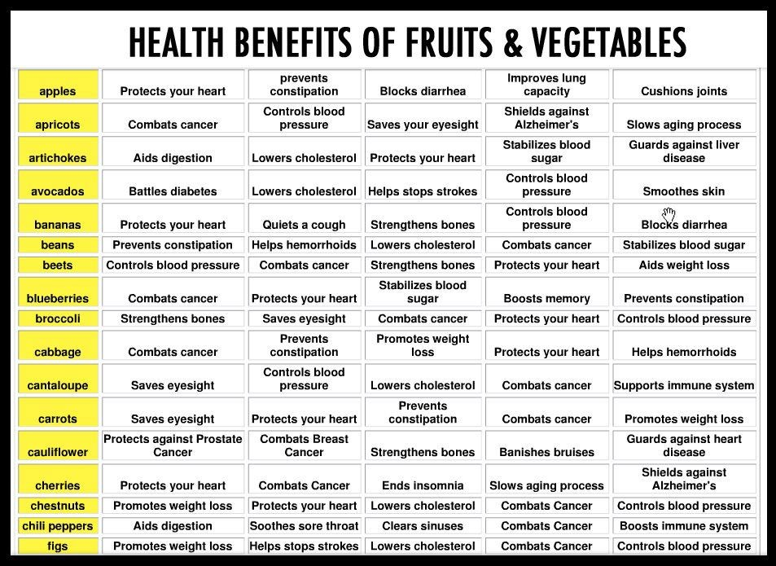

Vad krävs då, förutom ett noggrant utvalt läge, för att en nyetablering inom restaurangbranschen ska bli lyckad? En lika noggrant utvald meny-strategi.
Tiden går och det räcker inte längre med att sälja mat som smakar gott och ser bra ut, framöver kommer det krävas ytterligare en dimension på maten för att klara sig i den knivskarpa konkurrensen som restaurangbranschen utgör.
Denna dimension stavas H Ä L S A.
Människor idag lever ett allt längre liv och insikten om att kroppen måste hålla hela vägen in i kaklet har nått ut till en allt större grupp människor. Precis den resa som skönhetsbranschen har genomgått, från rena skönhetsprodukter till anti-åldrande och produkter med klara hälsofördelar, står nu restaurangbranschen inför. Vi har därför, med hjälp av experterna på Mintel Food & Drink, förberett en trendspaning som kommer vara en förutsättning för att er nya etablering i Sverige ska kunna ta en ledande position på marknaden.
Vi har etablerat tre fokusområden som tillsammans kommer hjälpa er att växa och skapa svarta siffror i räkenskaperna:

Sammantaget kan man se att intresset för hälsa och hållbarhet har ökat och att er verksamhet inom restaurangbranschen kan göra stora vinningar på att följa denna trend. Kan man dessutom kombinera detta med en bekväm och lättillgänglig verksamhet så har ni en god grund att bygga er Sverige-expansion på.
Eftersom fler lever längre och vi ser att antalet människor som blir hundra år eller äldre ökar samtidigt som kunskaperna om hur maten påverkar vår hälsa också ökar blir effekten att efterfrågan på kost med hälsofördelar kommer öka stort. Rapporten påpekar att mycket forskning görs idag på att skapa produkter och maträtter som för med sig positiva konkreta effekter för t ex. immunförsvaret, skelett- och ledbesvär, hjärnhälsa, ögonproblem osv.
PwC, PricewaterhouseCoopers, har gjort undersökningar som visar det ökande ätandet av hälsosam mat. Där kan noteras stora ökningar i alla åldersgrupper:

Källa
Council for Responsible Nutrition (CRN) har genomfört en undersökning som visar det ökande användandet av tillskott för en förbättrad hälsa. Eftersom dessa ämnen finns naturligt i vissa matgrupper ser vi möjligheten att via en genomtänkt meny, med hälsa i fokus, kunna fylla dessa kunders behov.

Källa
FN har gjort en prognos över antalet personer som beräknas bli hundra år eller äldre. Detta visar att det finns en växande marknad av åldrande människor med behov att hålla sig friska genom en hälsosam livsstil där maten kommer bli en allt viktigare del framöver.

Källa
Konsumenter världen över har fått en ökad medvetenhet om hållbarhet och dess effekt på miljön. Därför är det idag extremt viktigt att marknadsföra sig som ett bolag med ett genomarbetat hållbarhetsstrategi, och att leva upp till det.
Viktigt att trycka på när det kommer till marknadsföring, och utförande, är:
Dagens “on-the-go” samhälle kräver i allt högre grad snabba och nyttiga alternativ. Alla målgrupper intresserade då det blir vanligare att man har mer bråttom än tidigare och måste “slänga i sig något på vägen”. Kan man kombinera en restaurangs kvalitet, smak och näringsinnehåll med snabbheten i att köpa en färdigrätt i närmaste kiosk så har man hittat guld.
Att erbjuda en möjlighet att köpa med sig förpacketerade rätter i hållbara material utökar kundsegmentet och ger ett mervärde till de kunder som inte har tid att sätta sig i lokalen för en lunch eller middag. Att sälja måltidsboxar i stil med ”Frukostboxen, Lunchboxen, Middagsboxen, Snacksboxen” kan visa sig ge god avkastning. ”Ta med lunchen och gör dina leder en tjänst”
En undersökning från Euromonitor visar att brist på tid är den största faktorn till varför personer väljer att köpa färdigrätter istället för att laga mat själv.

Källa
En annan undersökning som visar hur mängden pengar som spenderas på att äta på restauranger ökat de senaste 40 åren. Och inget talar för att den mängden inte kommer fortsätta öka.

Sammanfattningsvis vill vi framhålla att marknaden för att sälja näringsrik och god mat har en ljus framtid. För konsumenterna är det idag väldigt viktigt med ett holistiskt tankesätt när det gäller hållbarhet och hälsa. De vill känna sig säkra på att maten är producerad på ett hållbart och miljövänligt samt att företagen de handlar hos tar ett miljöansvar för hela kedjan från produktion till servering. God marknadsföring är av stor vikt, men lika stor vikt ligger i att också genomföra det man kommunicerar utåt. Visar det sig att engagemanget inte är äkta kan man räkna med bortfall av konsumenter.
Att marknadsföra maten med vilka positiva hälsoeffekter den har ser vi som en viktig faktor för att skapa en nisch. Exempelvis skulle man kunna framhäva att maträtter med avocado sänker kolesterol eller att rätter med blomkål skyddar mot prostatacancer. Hälsoinriktningen skulle ge verksamheten den tredje dimensionen, utöver att maten ser tilltalande ut och smakar gott, som krävs för att ta locka medvetna konsumenter till restaurangen.

Källa